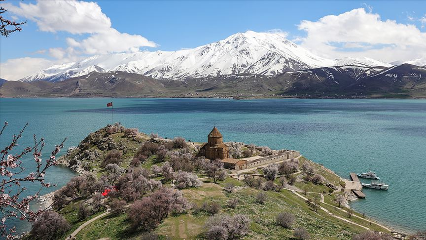
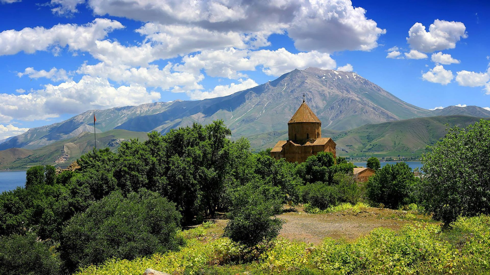

Van Şehri |
|
Şehir Tarihçesi 
Arkeolojik araştırmalara göre Van ili yazılı tarih öncesi dönemleri M.Ö. 5000-3000 yılları Kalkolitik dönem başlarına kadar uzanmaktadır. M.Ö. 2000 yılında bu bölgede ilk olarak devlet kuranlar Hurrilerdir. Daha sonra Hurrilerin bölgedeki devamı olan yerli kavimler tarafından M.Ö. 900 yıllarında başkentleri Tuşba ( VAN) olan Urartu devleti kurulmuştur. Urartular M.Ö. 612 yılına kadar Van Bölgesinde güneyde yukarı Mezopotamya'ya kadar uzanan topraklarda hüküm sürmüşlerdir. M.Ö. IX. Yüzyılda Kral Sarduri tarafından Van kalesi yaptırılmıştır. M.Ö. VII. Yüzyıl başlarında Mezopotamya'dan Anadolu'ya akınlar düzenleyen Asurlular Van kalesini ele geçirince Urartular Tuşba yakınlarında Rusahinili (Toprakkale) şehrini kurarak varlıklarını devam ettirmişlerdir. M.Ö. 612 yılında Anadolu'ya gelen Medler büyük Urartu Kırallığı'na son vermişlerdir. Yerleşik bir nizam kuramayan Med Krallığı Persler'e yenilip yıkılınca Van ve yöresi M.Ö. 332 yılına kadar Pers M.Ö. 129 yılına kadar Büyük İskender'in doğu seferinden sonra Makedonyalılar ve M.Ö. 88 yılına kadar da Partların egemenliğinde kalmıştır. Tarihi dönem içerisinde Van ve yöresi Romalılar ile Sasaniler arasında çatışma sebebi olmuştur. M.S. 395 yılına kadar Sasani sonra da Bizans egemenliğinde kalmıştır. Hz. Osman zamanında Bizans'ı bozguna uğratan Müslüman orduları 644 yılında Van ve yöresini ele geçirmiş bu hakimiyet Emevi ve Abbasi devletleri tarafından da sürdürülmüştür. Eskiden beri Van bölgesinde yaşayan Ermeni azınlığı kısa bir süre Van çevresinde bir krallık kurmuş ve İslam İmparatorluğu'na tabi olmuşlardır. arihi dönem içerisinde Van ve yöresi Romalılar ile Sasaniler arasında çatışma sebebi olmuştur. M.S. 395 yılına kadar Sasani sonra da Bizans egemenliğinde kalmıştır. Hz. Osman zamanında Bizans'ı bozguna uğratan Müslüman orduları 644 yılında Van ve yöresini ele geçirmiş bu hakimiyet Emevi ve Abbasi devletleri tarafından da sürdürülmüştür. Eskiden beri Van bölgesinde yaşayan Ermeni azınlığı kısa bir süre Van çevresinde bir krallık kurmuş ve İslam İmparatorluğu'na tabi olmuşlardır. Hıristiyan sanatının mühim bir eseri olan Akdamar Kilisesi aynı adı taşıyan Ada üzerinde Kral Gagik tarafından 915-921 yılları arasında yaptırılmıştır. 
|
Şehir Tarihçesi Yemekler Gezi Rehberi Ulaşım Duyurular Haberler İletişim |
| Bir Umut Furkan Berrak ürünüdür ©2022 | |